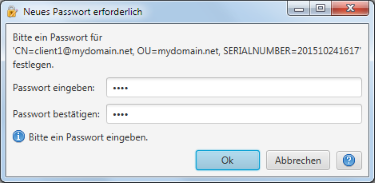

Neues Passwort erforderlich
Dieser Dialog erscheint immer dann, wenn ein neues Passwort erforderlich (z.B. nach Erzeugung eines neuen Schlüssels).

Der Meldungstext zeigt dabei an, für welches Objekt das Passwort erforderlich ist. Zur &Üuml;berprüfung
einer korrekten Eingabe, muss das Passwort zwei mal eingegeben werden. Unterscheiden sich beide Eingaben oder ist das
Passwort aus anderen Gründen ungültig, so erscheint der Dialog erneut. In einem solchen Fall zeigt eine
zusätzliche Meldung den Grund für die Neueingabe an.
Der Abbruch dieses Dialogs bricht auch die aktuelle Operation ab (z.B. Zertifikat erzeugen).